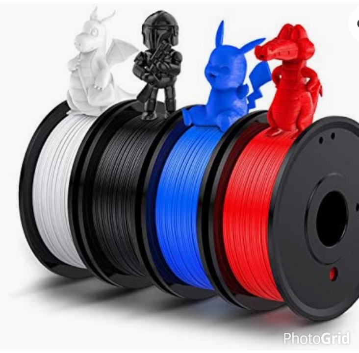

In 1981 Hideo Kodama published his account ofa fanctiona rapid prototyping system using photopolymers. A solid printed model was built up on in lyers each of which corresponded to a cross sectional slice in the model Even though he is regarded to have printed the first solid object from digital design, Charles Hull is created for the first 3D printer.
The 2010s was the first decade in which metal end use parts such as engine bracket and large nuts would be grown in job production other than obligatory being machined from bar stock or plate. In the present day the accuracy of 3D printing has improved , while the price has fallen rapidly .
